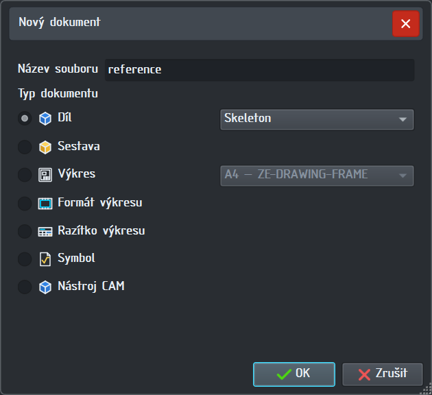
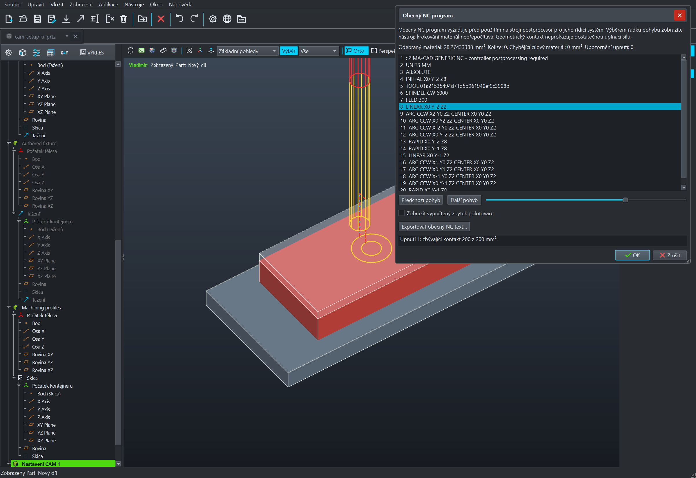

ZIMA-CAD / Návody
Najděte svůj další krok.
Obrázkové návody k jednotlivým funkcím. Stejné návody na webu i přímo v ZIMA-CADu.
Text návodu je v angličtině.

ZačínámeOtevřít návod SkicaOtevřít návod
SkicaOtevřít návod Vysunutí a rotaceOtevřít návod
Vysunutí a rotaceOtevřít návod Zaoblení a zkoseníOtevřít návod
Zaoblení a zkoseníOtevřít návod Tažení profiluOtevřít návod
Tažení profiluOtevřít návod Plechové dílyOtevřít návod
Plechové dílyOtevřít návod SestavyOtevřít návod
SestavyOtevřít návod VýkresyOtevřít návod
VýkresyOtevřít návod FEMOtevřít návod
FEMOtevřít návod RenderOtevřít návod
RenderOtevřít návod
CAMOtevřít návodŽádný návod neodpovídá hledání.